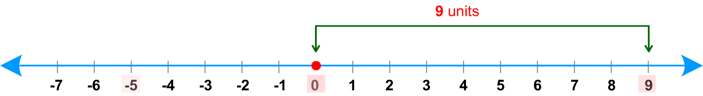
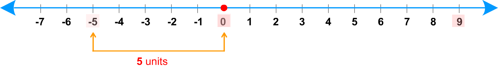

Objective: Finding the Absolute Value of an Integer
☜ ✔
☜ ✔
☜ ✔
☜ ✔
Definition:
The absolute value of an integer is the distance between the number and zero on the number line.
Distances, which are measurements, cannot be negative.
We use vertical bars | | to indicate the absolute value.
The absolute value of 7 is written as |7| .
The absolute value of – 5 is written as |– 5| .
Let's use the number line to find the absolute values of some numbers.
The absolute value of 9 = | 9 | = 9

The absolute value of – 5 = | – 5 | = 5

Since the number of units between 0 and 0 is zero, the absolute value of 0 is | 0 | =0.
Observe the following characteristics of absolute value:
●
The absolute value of a number measures its distance from 0 and distance is never negative.
The absolute value of a positive number or of zero is the number itself, and the absolute value of a negative number is its opposite.
●
The absolute value of a number is the same as the absolute value of the opposite of that number, since both are the same number of units away from zero.